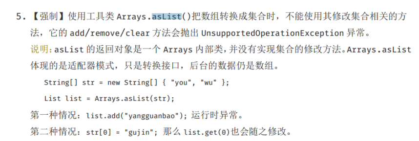

二、设计模式的六大原则（SOLID）
总原则——开闭原则（Open Closed Principle）
一个软件实体，如类、模块和函数应该对扩展开放，对修改关闭。
在程序需要进行拓展的时候，不能去修改原有的代码，而是要扩展原有代码，实现一个热插拔的效果。所以一句话概括就是：为了使程序的扩展性好，易于维护和升级。
想要达到这样的效果，我们需要使用接口和抽象类等。
1、单一职责原则（Single Responsibility Principle）
一个类应该只有一个发生变化的原因。
不要存在多于一个导致类变更的原因，也就是说每个类应该实现单一的职责，否则就应该把类拆分。
2、里氏替换原则（Liskov Substitution Principle）
所有引用基类的地方必须能透明地使用其子类的对象。
任何基类可以出现的地方，子类一定可以出现。里氏替换原则是继承复用的基石，只有当衍生类可以替换基类，软件单位的功能不受到影响时，基类才能真正被复用，而衍生类也能够在基类的基础上增加新的行为。
里氏代换原则是对“开-闭”原则的补充。实现“开闭”原则的关键步骤就是抽象化。而基类与子类的继承关系就是抽象化的具体实现，所以里氏替换原则是对实现抽象化的具体步骤的规范。里氏替换原则中，子类对父类的方法尽量不要重写和重载。因为父类代表了定义好的结构，通过这个规范的接口与外界交互，子类不应该随便破坏它。
3、依赖倒置原则（Dependence Inversion Principle）
1、上层模块不应该依赖底层模块，它们都应该依赖于抽象。
2、抽象不应该依赖于细节，细节应该依赖于抽象。
面向接口编程，依赖于抽象而不依赖于具体。写代码时用到具体类时，不与具体类交互，而与具体类的上层接口交互。
4、接口隔离原则（Interface Segregation Principle）
1、客户端不应该依赖它不需要的接口。
2、类间的依赖关系应该建立在最小的接口上。
每个接口中不存在子类用不到却必须实现的方法，如果不然，就要将接口拆分。使用多个隔离的接口，比使用单个接口（多个接口方法集合到一个的接口）要好。
5、迪米特法则（最少知道原则）(Law of Demeter)
只与你的直接朋友交谈，不跟“陌生人”说话。
一个类对自己依赖的类知道的越少越好。无论被依赖的类多么复杂，都应该将逻辑封装在方法的内部，通过public方法提供给外部。这样当被依赖的类变化时，才能最小的影响该类。
最少知道原则的另一个表达方式是：只与直接的朋友通信。类之间只要有耦合关系，就叫朋友关系。耦合分为依赖、关联、聚合、组合等。我们称出现为成员变量、方法参数、方法返回值中的类为直接朋友。局部变量、临时变量则不是直接的朋友。我们要求陌生的类不要作为局部变量出现在类中。
6、合成复用原则（Composite Reuse Principle）
尽量使用对象组合/聚合，而不是继承关系达到软件复用的目的。
合成或聚合可以将已有对象纳入到新对象中，使之成为新对象的一部分，因此新对象可以调用已有对象的功能。
三、设计模式的三大类
创建型模式（Creational Pattern）：对类的实例化过程进行了抽象，能够将软件模块中对象的创建和对象的使用分离。
（5种）工厂模式、抽象工厂模式、单例模式、建造者模式、原型模式
结构型模式（Structural Pattern）：关注于对象的组成以及对象之间的依赖关系，描述如何将类或者对象结合在一起形成更大的结构，就像搭积木，可以通过简单积木的组合形成复杂的、功能更为强大的结构。
（7种）适配器模式、装饰者模式、代理模式、外观模式、桥接模式、组合模式、享元模式
行为型模式（Behavioral Pattern）：关注于对象的行为问题，是对在不同的对象之间划分责任和算法的抽象化；不仅仅关注类和对象的结构，而且重点关注它们之间的相互作用。
（11种）策略模式、模板方法模式、观察者模式、迭代器模式、责任链模式、命令模式、备忘录模式、状态模式、访问者模式、中介者模式、解释器模式
记忆口诀：行状责中模访解备观策命迭（形状折中模仿，戒备观测鸣笛）
四、23种设计模式
---------------------创建型模式---------------------
工厂模式
工厂模式（Factory Pattern）是Java中最常用的设计模式之一。
在工厂模式中，我们在创建对象时不会对客户端暴露创建逻辑，并且是通过使用一个共同的接口来指向新创建的对象。
定义一个创建对象的接口，让其子类自己决定实例化哪一个工厂类，工厂模式使其创建过程延迟到子类进行。
应用实例：您需要一辆汽车，可以直接从工厂里面提货，而不用去管这辆汽车是怎么做出来的，以及这个汽车里面的具体实现。而至于需要哪个牌子的汽车，就到哪个牌子的工厂。
抽象工厂模式
抽象工厂模式（Abstract Factory Pattern）是围绕一个超级工厂创建其他工厂。该超级工厂又称为其他工厂的工厂。
在抽象工厂模式中，接口是负责创建一个相关对象的工厂，不需要显式指定它们的类。每个生成的工厂都能按照工厂模式提供对象。
提供一个创建一系列相关或相互依赖对象的接口，而无需指定它们具体的类。
应用实例：对于一个家庭来说，可能有商务女装、商务男装、时尚女装、时尚男装，都是成套的，即一系列具体产品。假设一种情况，在您的家中，某一个衣柜（具体工厂）只能存放某一种这样的衣服（成套，一系列具体产品），每次拿这种成套的衣服时也自然要从这个衣柜中取出了。用 OO 的思想去理解，所有的衣柜（具体工厂）都是衣柜类的（抽象工厂）某一个，而每一件成套的衣服又包括具体的上衣（某一具体产品），裤子（某一具体产品），这些具体的上衣其实也都是上衣（抽象产品），具体的裤子也都是裤子（另一个抽象产品）。
单例模式
单例模式（Singleton Pattern）是Java中最简单的设计模式之一。
这种模式涉及到一个单一的类，该类负责创建自己的对象，同时确保只有单个对象被创建。这个类提供了一种访问其唯一的对象的方式，可以直接访问，不需要实例化该类的对象。
保证一个类仅有一个实例，并提供一个访问它的全局访问点。
应用实例：一个班级只能有一个班主任。
---------------------结构型模式---------------------
适配器模式
适配器模式（Adapter Pattern）是作为两个不兼容的接口之间的桥梁。
这种模式涉及到一个单一的类，该类负责加入独立的或不兼容的接口功能。
将一个类的接口转换成客户希望的另外一个接口。适配器模式使得原本由于接口不兼容而不能一起工作的那些类可以一起工作。
应用实例：
1、读卡器是作为内存卡和笔记本之间的适配器。您将内存卡插入读卡器，再将读卡器插入笔记本，这样就可以通过笔记本来读取内存卡；
2、美国电器110V，中国220V，就要有一个变压器将110V转化为220V。

装饰器模式
装饰器模式（Decorator Pattern）允许向一个现有的对象添加新的功能，同时又不改变其结构。
这种模式创建了一个装饰类，用来包装原有的类，并在保持类方法签名完整性的前提下，提供了额外的功能。
动态地给一个对象添加一些额外的职责。就增加功能来说，装饰器模式相比生成子类更为灵活。
应用实例：
1、孙悟空有72变，当他变成"庙宇"后，他的根本还是一只猴子，但是他又有了庙宇的功能；
2、将一个形状装饰上不同的颜色，同时又不改变形状。
代理模式
在代理模式（Proxy Pattern）中，一个类代表另一个类的功能。
在代理模式中，我们创建具有现有对象的对象，以便向外界提供功能接口。
为其他对象提供一种代理以控制对这个对象的访问。
应用实例：
1、Windows里面的快捷方式；
2、买火车票不一定在火车站买，也可以去代售点；
3、一张支票或银行存单是账户中资金的代理。支票在市场交易中用来代替现金，并提供对签发人账号上资金的控制；
4、Spring AOP。
注意事项：
1、和适配器模式的区别：适配器模式主要改变所考虑对象的接口，而代理模式不能改变所代理类的接口。
2、和装饰器模式的区别：装饰器模式为了增强功能，而代理模式是为了加以控制。
---------------------行为型模式---------------------
迭代器模式
迭代器模式（Iterator Pattern）是Java和.Net编程环境中非常常用的设计模式。这种模式用于顺序访问集合对象的元素，不需要知道集合对象的底层表示。
迭代器模式属于行为型模式。
提供一种方法顺序访问一个聚合对象中各个元素，而又无须暴露该对象的内部表示。
应用实例：JAVA中的iterator。